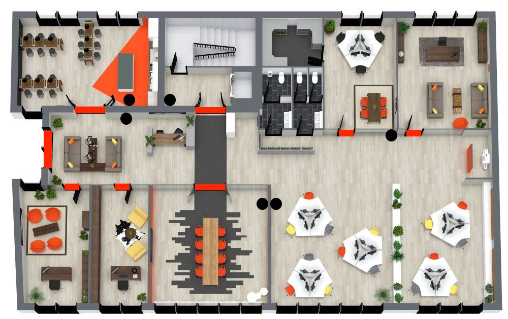

Este proyecto muestra la instalación y distribución de sensores AJAX en la oficina,
incluyendo detectores de movimiento, sensores de apertura y dispositivos de seguridad
para proteger accesos y zonas críticas.

Explicacion del plano
Linea roja: Sensor de puerta.
Circulo negro: Volumetrico de movimiento.
Detalles del proyecto
Sensores AJAX MotionProtect para detección de movimiento.
Sensores DoorProtect para puertas y accesos principales.
Instalación sin cables mediante Wi-Fi.
Notificaciones en tiempo real mediante aplicación móvil.
Configuración de modos armado/desarmado para empleados.